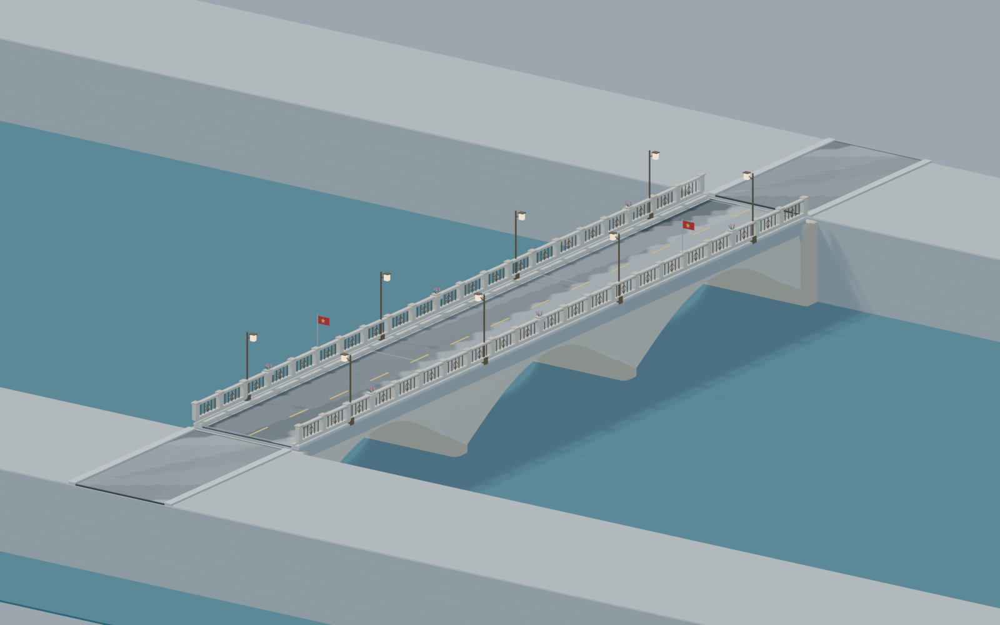
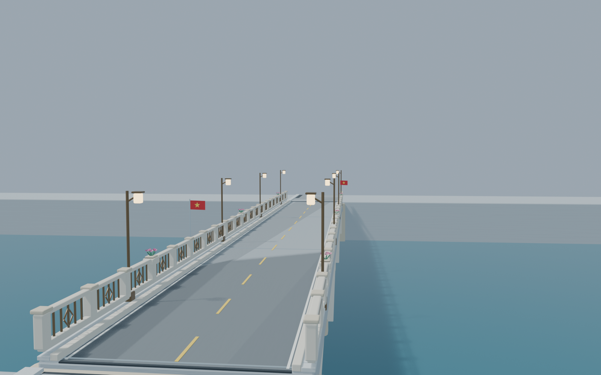
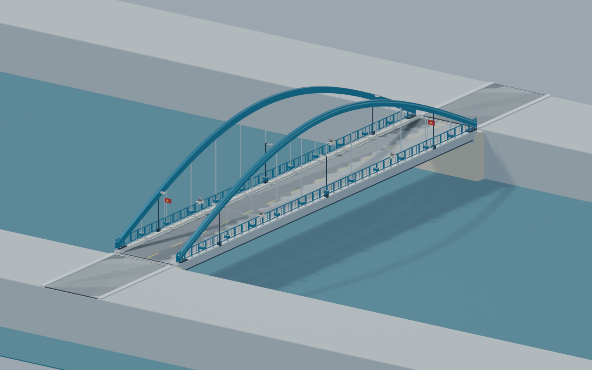
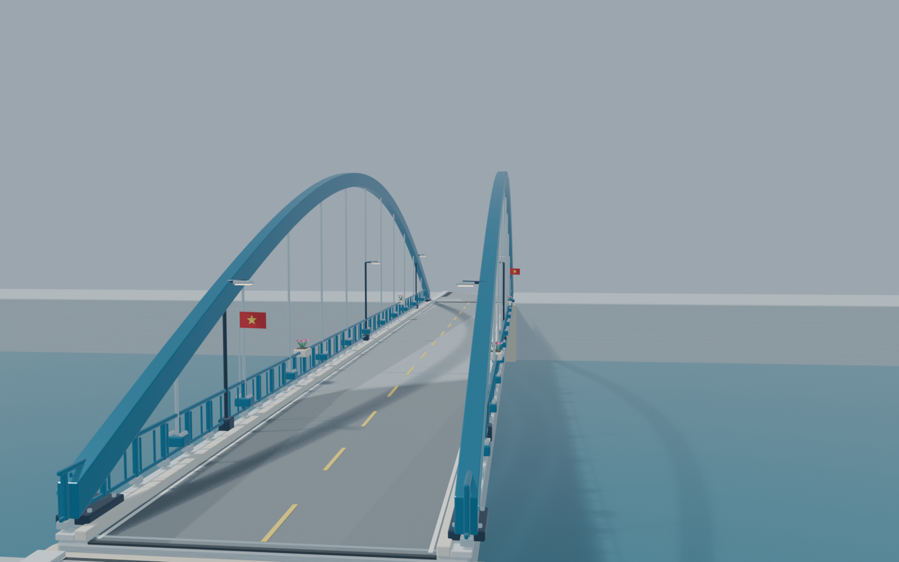
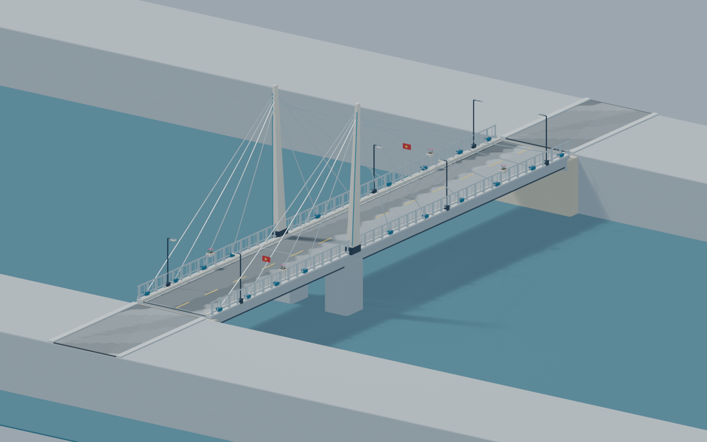
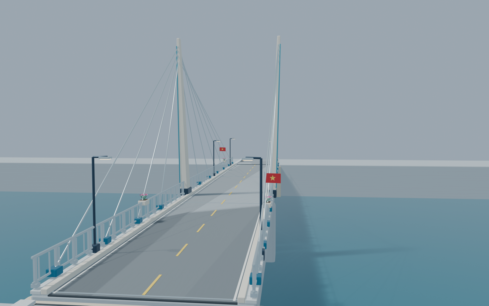

ASông ViệtTHANH LỊCH · GẦN GŨI PHỐ VIỆTBa nhịp vòm bê tông màu đá sáng. Lan can đồng với họa tiết, trụ bo cạnh và đèn lồng gọn; tạo cảm giác vững chãi, tinh tế.Xem ảnh lớn ↗Góc nhìn từ đầu cầu
BVòm XanhKHỎE KHOẮN · NỔI BẬTHai vòm thép xanh ôm ngoài mặt đường, dây treo và liên kết kim loại rõ nét. Hình dáng dễ nhận ra từ xa, hợp chiếc xe đua xanh.Xem ảnh lớn ↗Góc nhìn từ đầu cầu
CCánh BuồmHIỆN ĐẠI · THOÁNG TẦM NHÌNHai tháp nghiêng nhẹ, cáp văng tỏa hình quạt và dầm hộp màu xanh đậm. Tâm đường thông thoáng, tạo điểm nhấn cho khu phố ven sông.Xem ảnh lớn ↗Góc nhìn từ đầu cầu